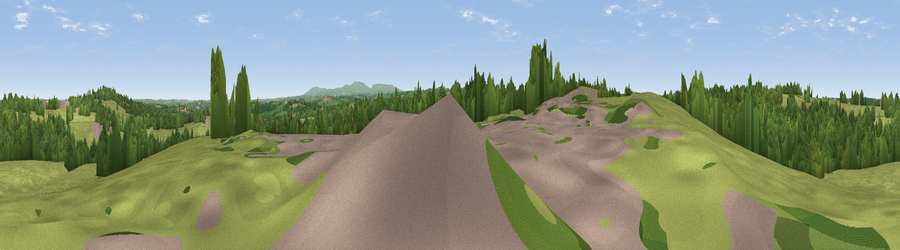

Viewpoint near Highampton
#33000 in England · top 77% of its area beats it · near Highampton · path 128 mWhere it is
The exact computed spot (SS 47725 03325). Click the marker for map links.
Public access: the nearest public right of way is about 128 m away — the final stretch may cross private land. Computed from Natural England's CRoW access layer and OpenStreetMap rights of way — not the legal definitive map. Always verify locally.
The view, rendered

A 360° render of this exact spot computed from the terrain model, tree cover and land cover — summer colours, afternoon light, calibrated against photographs of famous viewpoints. Real trees, hedges and buildings will differ in detail.
The panorama
Grey silhouette: terrain skyline in each direction (720 bearings, Earth curvature and refraction included). Dashed green: skyline with trees (+15 m) and buildings (+8 m) as obstacles. Blue strip: how far the ground is visible on each bearing.
Where the view opens
Wedge length = distance to the farthest visible ground on that bearing (vegetation-aware). Rings at 10, 25 and 50 km.
What fills the view
67% grassland · 30% woodland · 2% built-up · 1% cropland
Angular shares of the visible panorama (visual magnitude), not map area. Landscape diversity 0.34 (0–1 Shannon).
Key numbers
More beautiful places nearby
The staircase of upgrades: each row has a higher view potential than everything closer. Driving times are estimates from straight-line distance, calibrated against real road routing — check an actual route before setting out.
| Place | Direction | Drive | Score |
|---|---|---|---|
| Viewpoint near Highampton | NE · 2 km | ~5 min | 59.5 |
| Viewpoint near Petrockstowe | NNE · 6 km | ~13 min | 65.5 |
| Sourton Tors | SSE · 15 km | ~27 min | 74.8 |
| Viewpoint near Sourton | SSE · 16 km | ~28 min | 75.7 |
| Yes Tor | SE · 17 km | ~29 min | 78.5 |
| Viewpoint near Parkham | NNW · 23 km | ~37 min | 81.7 |
| Viewpoint near Bucks Mills | NNW · 23 km | ~38 min | 84.0 |
| Viewpoint near Crackington Haven | WSW · 36 km | ~54 min | 88.1 |
50.80941, -4.16266 · source: screening · position refined by local search. Computed location — check access rights before visiting.